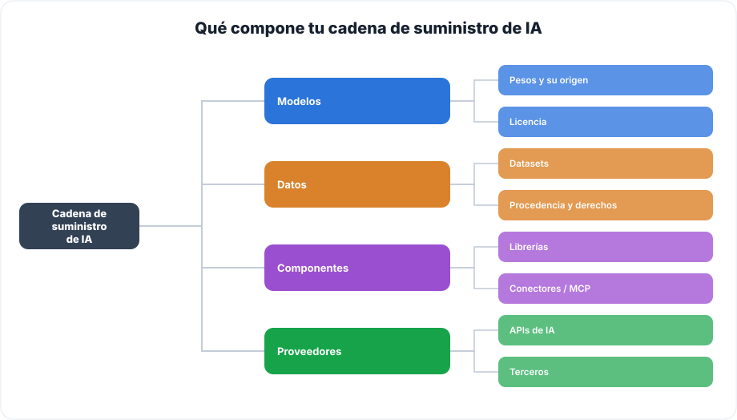
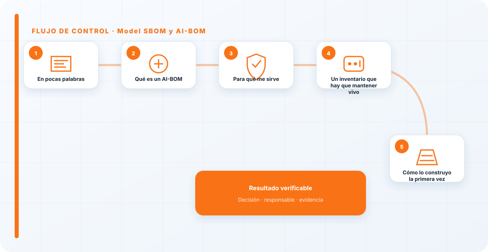
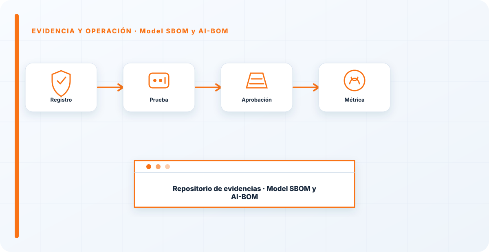

En pocas palabras
No puedes gobernar la cadena de suministro de una IA de la que no sabes de qué está hecha. El AI-BOM —la lista de materiales de tu sistema de IA— es esa foto de sus componentes: modelos, datasets, librerías, conectores, cada uno con su origen y su versión. Es el equivalente al SBOM del software, aplicado a la IA, y es el cimiento sobre el que se apoya todo lo demás de este pilar.
Qué es un AI-BOM
Es el inventario de todo lo que compone tu sistema de IA: los modelos y sus pesos, los datasets, las librerías, los componentes y los conectores, cada uno con su procedencia y su versión. No es un documento decorativo: es la herramienta que te permite responder, el día que salga una vulnerabilidad en un componente, a la pregunta "¿me afecta?".

Sin esa lista, cada vulnerabilidad publicada te obliga a una investigación manual y angustiosa para averiguar si usas el componente afectado. Con ella, es una consulta de dos minutos. Esa diferencia es toda la diferencia el día del susto.
Para qué me sirve
El AI-BOM es la base de todo lo demás en este pilar: no puedes verificar procedencia, evaluar el riesgo de terceros ni responder a un incidente de cadena de suministro sin saber primero qué tienes. Es el mapa; el resto de guías son controles que se aplican sobre ese mapa.
Y da igual lo sofisticados que sean esos controles: si no sabes qué componentes tienes, están construidos sobre arena. El inventario no es el paso glamuroso, pero es el que sostiene los demás.

Un inventario que hay que mantener vivo
Como todo inventario, el AI-BOM solo vale si está al día. Un modelo que se actualiza, una librería nueva, un conector que se enchufa: cada cambio tiene que reflejarse, o la lista empieza a mentir. Por eso lo integro en el proceso —cada vez que entra un componente nuevo, se registra— en lugar de dejarlo para una revisión anual que siempre llega tarde y desactualizada.
Un AI-BOM congelado es casi peor que no tenerlo, porque da una falsa sensación de control sobre una realidad que ya cambió.
Cómo lo construyo la primera vez
La primera vez asusta por el "¿de dónde saco todo esto?". Yo empiezo por lo que ya tienes a mano y voy completando: los modelos en producción y su origen, los datasets que usaste para entrenarlos o ajustarlos, las librerías de IA de tus proyectos y los conectores enchufados. Con eso ya tienes un primer AI-BOM imperfecto pero real, que es infinitamente mejor que el inventario perfecto que nunca se termina.
Lo importante no es nacer completo, es nacer y mantenerse. Un AI-BOM que cubre el 80% y se actualiza vale más que uno que aspiraba al 100% y se quedó en un borrador que nadie tocó. Empieza tosco y hazlo crecer; la exhaustividad llega con el uso, no de golpe.
La pregunta que deja mudo a casi todo el mundo es simple: "¿de qué está hecho tu sistema de IA?". Si no puedes responderla con una lista, no controlas tu cadena de suministro, la sufres. El AI-BOM no es burocracia; es lo que te permite reaccionar el día que un modelo o una librería que usas resulta ser un problema. Sin él, ese día te pilla investigando a ciegas.
Los errores que veo una y otra vez
- No tener inventario de componentes de IA.
- Listar el código pero no modelos ni datasets.
- No registrar versiones ni procedencia.
- No poder saber si una vulnerabilidad te afecta.
- Dejar el AI-BOM congelado mientras los componentes cambian.
Cómo lo llevaría a un entorno real
Cuando aterrizo model sbom y ai-bom en una organización, no empiezo por comprar una herramienta ni por redactar veinte páginas. Empiezo por dibujar qué ocurre hoy: quién solicita el cambio, quién lo aprueba, qué sistemas intervienen, qué datos cruzan el proceso y quién se entera cuando algo falla. Ese dibujo suele descubrir más problemas que cualquier checklist. En cadena de suministro, lo peligroso no es solo carecer de controles; también lo es creer que existen porque alguien los escribió una vez.
Después separo lo imprescindible de lo deseable. Lo imprescindible debe poder comprobarse: un responsable identificado, una regla clara, una evidencia fechada y un mecanismo para reaccionar. En este caso revisaría especialmente Model, SBOM y responsable. No me vale una respuesta del tipo «lo gestiona el proveedor» o «eso lo mira seguridad». Necesito saber qué persona toma la decisión, con qué información y dentro de qué plazo.
La implantación debe crecer con el riesgo. Un piloto interno puede funcionar con una ficha breve y una revisión manual. Un sistema que afecta a clientes, empleados, dinero o información sensible necesita segregación de funciones, pruebas independientes, monitorización y un expediente mantenido. Mi criterio es sencillo: cuanto más difícil sea deshacer el daño, más fuerte debe ser la barrera antes de producción.
Decisiones que deben quedar por escrito
Hay decisiones que no deberían vivir en una reunión ni en un mensaje de chat. Para model sbom y ai-bom dejaría documentados el alcance, los supuestos, los límites de uso, las excepciones aceptadas y las condiciones que obligan a detener o reevaluar. El documento no tiene que ser enorme, pero sí debe permitir que otra persona entienda por qué se hizo lo que se hizo.
También registraría quién puede cambiar control, quién valida evidencia y quién recibe las alertas relacionadas con Model. Cuando esas tres responsabilidades se mezclan, aparece el clásico problema: el mismo equipo construye, aprueba y declara que todo funciona. No siempre se puede separar por completo, sobre todo en organizaciones pequeñas, pero al menos debe existir una revisión por alguien que no dependa del éxito inmediato del despliegue.
Las excepciones merecen un tratamiento propio. Una excepción sin fecha de caducidad acaba convirtiéndose en la arquitectura real. Por eso exigiría motivo, riesgo aceptado, responsable, compensaciones, fecha de revisión y criterio de cierre. Si falta uno de esos elementos, no es una excepción gestionada; es una deuda invisible.

Un ejemplo práctico
Imaginemos que un equipo quiere incorporar model sbom y ai-bom a un servicio que ya está en producción. La propuesta promete reducir tiempos y automatizar tareas, pero utiliza componentes que cambian con frecuencia. Antes de aprobarlo, pediría una prueba limitada, un inventario de dependencias, un flujo de datos y una definición clara de qué acciones quedan fuera del alcance.
Durante la prueba recogería resultados normales y casos límite. No solo miraría si funciona; comprobaría qué ocurre cuando faltan datos, cambia una versión, se pierde conectividad, llega una entrada manipulada o un usuario intenta superar sus permisos. Ahí es donde se ve si el diseño aguanta. En muchas pruebas felices todo parece seguro porque nadie ha intentado romper la hipótesis de partida.
Si los resultados son aceptables, la salida a producción tendría condiciones: versión fijada, configuración aprobada, logs disponibles, responsables de guardia, procedimiento de rollback y revisión tras las primeras semanas. Si alguno de esos elementos no existe, prefiero retrasar el despliegue. Un día de demora suele ser más barato que investigar después un comportamiento que nadie puede reconstruir.
Qué evidencias guardaría
Para demostrar que el control funciona conservaría evidencias que cuenten una historia completa, no capturas sueltas. La historia debe enlazar necesidad, decisión, implementación, prueba y operación. En model sbom y ai-bom eso incluye como mínimo la ficha del activo, el diagrama vigente, la configuración aprobada, el resultado de las pruebas y el registro de cambios.
No guardaría información por acumular. Si los logs contienen prompts, documentos, datos personales o secretos, aplicaría minimización, control de acceso y retención. La evidencia debe ayudar a investigar y auditar sin crear una segunda fuga de información. Es frecuente endurecer el sistema principal y dejar un repositorio de evidencias abierto a demasiadas personas.
- Propietario y finalidad de model sbom y ai-bom, con fecha de revisión.
- Inventario de Model, SBOM y dependencias asociadas.
- Criterios de aceptación y resultados sobre responsable y control.
- Configuración efectiva, versión y aprobación del cambio.
- Alertas, incidentes, excepciones y acciones correctivas cerradas.
Señales de que el control no está funcionando
El primer síntoma es que nadie sabe responder con rapidez quién es el responsable. El segundo es que la documentación describe una versión distinta de la que está operando. El tercero es que las alertas existen, pero llegan a un buzón que nadie revisa. Cuando aparecen esos tres síntomas, el problema no es tecnológico: el control se ha desconectado de la operación.
También desconfío de las métricas demasiado perfectas. Cero incidentes, cero excepciones y cien por cien de cumplimiento pueden significar excelencia, pero con frecuencia significan que no estamos mirando. Prefiero indicadores que enseñen tendencia: tiempo de corrección, antigüedad de excepciones, cobertura de pruebas, cambios sin revisión y reincidencias.
Por último, revisaría el comportamiento después de cada cambio significativo. En IA, una actualización de modelo, dataset, prompt, herramienta, permiso o proveedor puede alterar el riesgo sin cambiar el nombre del servicio. Si el proceso solo reevalúa cuando se crea un proyecto nuevo, se quedará ciego durante la mayor parte de la vida útil.
Mi criterio de cierre
Considero que model sbom y ai-bom está razonablemente controlado cuando el equipo puede explicar el proceso sin depender de una sola persona, reconstruir una decisión con evidencias y detener el servicio sin improvisar. No busco perfección documental; busco que la organización pueda tomar decisiones repetibles bajo presión.
El cierre no consiste en marcar todas las casillas. Consiste en demostrar que los riesgos relevantes tienen propietario, que los controles se prueban y que las desviaciones producen una acción. Si la evidencia no cambia ninguna decisión, probablemente estamos generando burocracia. Si una decisión importante no deja evidencia, estamos creando fragilidad.
Este enfoque es el que intento mantener en toda CyberLibrary AI: explicar el control de forma que lo entienda negocio, pero con suficiente profundidad para que arquitectura, seguridad, auditoría y operaciones puedan aplicarlo de verdad.
Referencias y marcos relacionados
Contenido educativo y técnico. No sustituye asesoramiento jurídico ni una auditoría formal.